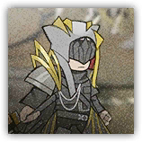
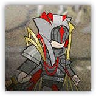

深池护卫队成员 Dublinn Spec Ops
近战 物理；普通 类人（任意）
 |
“校官”率领的部队成员。擅长突击战与攻坚战，纪律严明。 |
深池护卫队成员丨Dublinn Spec Ops
中型类人（任意），守序中立
| AC 16 | 先攻 +1（11） |
| HP 95（14d8+28） | |
| 速度 30尺 | |
| 调整 | 豁免 | 调整 | 豁免 | 调整 | 豁免 | ||||||||
|---|---|---|---|---|---|---|---|---|---|---|---|---|---|
| 力量 | 18 | +4 | +6 | 敏捷 | 13 | +1 | +1 | 体质 | 15 | +2 | +2 | ||
| 智力 | 10 | +0 | +0 | 感知 | 12 | +1 | +1 | 魅力 | 11 | +0 | +0 |
| 技能 运动+6，威吓+2 |
| 感官 被动察觉11 |
| 语言 通用语，维多利亚语，塔拉语 |
| CR 4（XP 1,100；PB +2） |
特质 Traits
点燃行军 Igniting Advance。护卫队成员使用军刀发动的攻击命中物件时，其命中均为重击命中。护卫队成员可以随意点燃任何触及内未被着装或携带的可燃物件，或者任何自愿生物。
动作 Actions
多重攻击 Multiattack。深池护卫队成员使用军刀发动两次攻击。
军刀 Saber。近战攻击检定：+6，触及5尺。命中：10（1d10+5）挥砍伤害。重击：目标开始燃烧。
连续斩击 Flurry of Five。护卫队成员使用军刀发动五次攻击，但是其伤害不加入属性调整值。护卫队成员不能连续两轮使用此动作项。
深池护卫队精锐成员 Dublinn Elite Spec Ops
近战 物理；普通 类人（任意）
 |
“校官”麾下精锐突击核心。在贴身近战中可爆发高密度连斩。 |
深池护卫队精锐成员丨Elite Spec Ops
中型类人（任意），守序邪恶
| AC 17 | 先攻 +1（11） |
| HP 136（16d8+64） | |
| 速度 30尺 | |
| 调整 | 豁免 | 调整 | 豁免 | 调整 | 豁免 | ||||||||
|---|---|---|---|---|---|---|---|---|---|---|---|---|---|
| 力量 | 19 | +4 | +7 | 敏捷 | 14 | +2 | +2 | 体质 | 18 | +4 | +4 | ||
| 智力 | 10 | +0 | +0 | 感知 | 12 | +1 | +1 | 魅力 | 12 | +1 | +1 |
| 技能 运动+7，威吓+4 |
| 感官 被动察觉11 |
| 语言 通用语，维多利亚语，塔拉语 |
| CR 6（XP 2,300；PB +3） |
特质 Traits
点燃行军 Igniting Advance。护卫队成员使用军刀发动的攻击命中物件时，其命中均为重击命中。护卫队成员可以随意点燃任何触及内未被着装或携带的可燃物件，或者任何自愿生物。
动作 Actions
多重攻击 Multiattack。深池护卫队精锐成员使用军刀发动两次攻击。
军刀 Saber。近战攻击检定：+7，触及5尺。命中：12（2d10+6）挥砍伤害。重击：目标开始燃烧。
连续斩击 Flurry of Five。护卫队成员使用军刀发动五次攻击，但是其伤害不加入属性调整值。护卫队成员不能连续两轮使用此动作项。